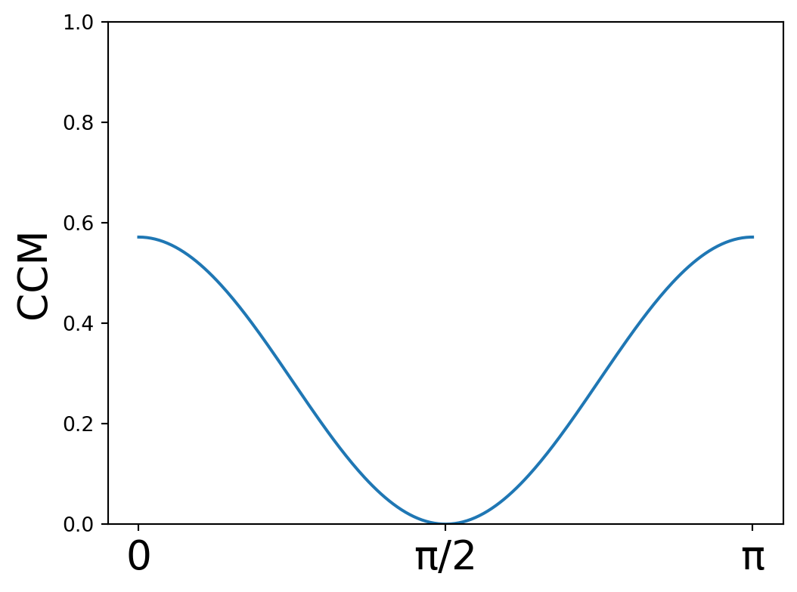
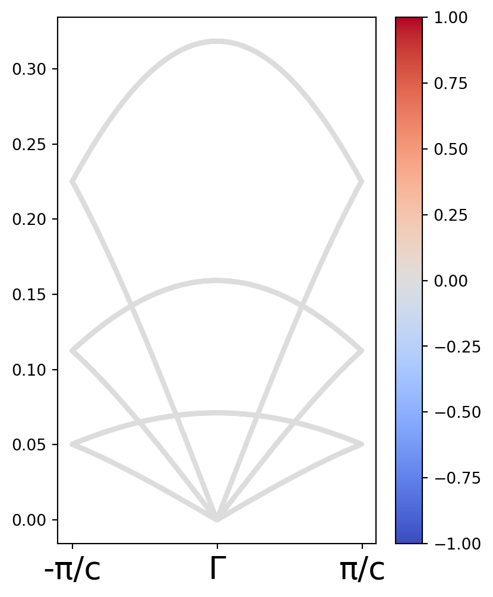
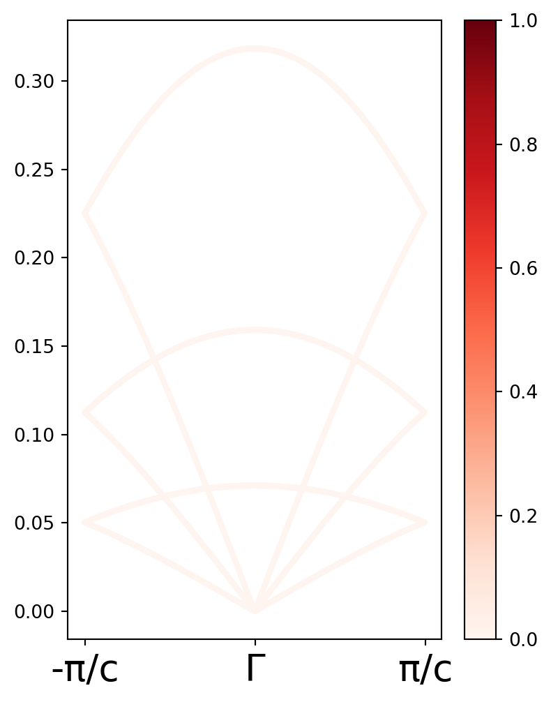

from pylab import *
import plotly.graph_objects as goCálculo de CCM para una cadena quiral C2
Los cálculos de la estructura de bandas se realizan de forma análoga a los descritos en el capítulo anterior. En este capítulo, sin embargo, se calcula la quiralidad de la estructura y los fonones usando el CCM como criterio.
# Masas de los distintos sitios.
m1 = 1
m2 = 1
M = [m1,m2]
#Matriz de resortes a lo largo de x.
KL = 1
KT1 = 0.05
KT2 = 0.25
Kx = array([[KL,0,0],
[0,KT1,0],
[0,0,KT2]],dtype=complex)
a = 1
d = 2
φxy = arccos(a/d)
c = 2 * a * tan(φxy)
#Rotación de φ respecto al plano x - y.
def T(φ):
return array([[cos(φ) ,0. ,sin(φ)],
[0. ,1. ,0],
[-sin(φ),0. ,cos(φ)]])
#Rotación respecto al eje z.
def U(θ):
return array([[cos(θ),-sin(θ),0],
[sin(θ),cos(θ),0],
[ 0, 0,1]] )
r1 = array([1,0,0])
r2 = dot(U(2*pi/2),r1) + array([0,0,c/2])
r1plus = r1 + [0,0,c]
r2minus = r2 - [0,0,c]
positions = array([r1,r2])
positionsnn = array([r2minus,r1plus])
X,Y,Z = positions.T
Xnn,Ynn,Znn = positionsnn.TDATA = [go.Scatter3d(x=X, y=Y, z=Z,mode='markers',marker_color = "blue",showlegend=False)]
DATA.append(go.Scatter3d(x=Xnn, y=Ynn, z=Znn,mode='markers',marker_color = "red",showlegend=False))
DATA.append(go.Scatter3d(x= [X[0],Xnn[0]], y=[Y[0],Ynn[0]], z=[Z[0],Znn[0]],mode='lines',line=dict(color='red'),showlegend=False))
DATA.append(go.Scatter3d(x= [X[0],X[1]], y=[Y[0],Y[1]], z=[Z[0],Z[1]],mode='lines',line=dict(color='blue'),showlegend=False))
DATA.append(go.Scatter3d(x= [X[1],Xnn[1]], y=[Y[1],Ynn[1]], z=[Z[1],Znn[1]],mode='lines',line=dict(color='red'),showlegend=False))fig = go.Figure(data=DATA)
fig.show()Cálculo de CCM de la estructura
#Matriz identidad.
Id = array([[1,0,0],
[0,1,0],
[0,0,1]] )
#Reflexión respecto al plano x - z.
σy = array([[-1,0,0],
[0,1,0],
[0,0,1]] )
def TensT(O,A):
"""Función que aplica transforma por un operador O a un tensor A."""
return dot( inv(O), dot(A,O) )Con esto, se define la función que hace el cálculo del CCM de la estructura.
RCM = (m1*r1 + m2*r2)/(m1 + m2)
# Coordenada Relativa 1
qrcm1 = sqrt(m1)*(r1 - RCM)
#Coordenada Relativa 2
qrcm2 = sqrt(m2)*(r2 - RCM)
Qrcm = [qrcm1,qrcm2]def CCMS(σ):
num = 0
den = 0
for q in Qrcm:
num = num + dot(q,dot(Id + σ,q))
den = den + dot(q,q)
return 1 - (num/(2*den))θ = linspace(0,pi,300)
σ = []
for ang in θ:
σ.append(TensT(U(ang),σy))
σ = array(σ)
CCM_estructura = []
for ref in σ:
CCM_estructura.append(CCMS(ref))
print("La CCM de la estructura es", str(np.min(CCM_estructura)))La CCM de la estructura es 1.5770858433183932e-05Labels = [r"0",r"π/2",r"π"]
Ticks = concatenate([[0],[pi/2],[pi]])
fig,ax = plt.subplots(ncols=1,nrows=1,figsize=(6,4.5))
ax.plot(θ,CCM_estructura)
ax.set_xticks(Ticks)
ax.set_ylim([0,1])
ax.set_xticklabels(Labels,fontsize = 20);
ax.set_ylabel("CCM",fontsize = 20)
plt.show()
Cálculos de los modos vibracionales$
Debajo se muestra un bloque de código donde se define una función que construye y diagonaliza la matriz dinámica para una cadena con simetría \(C_{2}\), y que además obtiene la polarización de los modos vibracionales.
def expectedval(vec,S):
return dot(np.conj(vec).T,dot(S,vec)).real
θ = linspace(0,pi,300)
def CCMMax(q):
max = 0
for ang in θ:
σ = TensT(U(ang),σy)
if abs(expectedval(q,Id + σ)) > max:
max = abs(expectedval(q,Id + σ))
M = expectedval(q,Id + σ)
return Mdef EigenfrequenciesC2(k):
"""Función que regresa las eigenfrecuencias para un vector recíproco kz dado."""
#Se define el tensor de esfuerzos de todo el sistema.
#Matriz con constante de fuerza considerando una rotación respecto al plano x - y.
φxy = pi/3
Kx2 = dot(T(φxy),dot(Kx,T(-φxy)))
#Matrices de fuerza para cada uno de los vectores en la red.
K12 = dot(U(0),dot(Kx2,U(0)))
DicMat = { 0: 2* K12/m1,
1: -1*(K12 + K12*exp(-1J*k*c))/sqrt(m1*m2),
2: -1*(K12 + K12*exp(-1J*k*c)).conj().T/sqrt(m1*m2),
3: 2*K12/m2}
Dinteger = array([[0,1],
[2,3]])
Dm = [ [DicMat[i] for i in rw] for rw in Dinteger ]
Dynamical = asarray(np.bmat(Dm))
ω2,eigvecs = eigh(Dynamical)
return sqrt(abs(ω2))/2/pi,eigvecsdef CCM_general(ω,eigvecs):
CCM = []
for i in range(len(ω2)):
eigvec = eigvecs[:,i]
q1 = sqrt(m1) * eigvec[0:3]
q2 = sqrt(m2) * eigvec[3:]
Q = [q1,q2]
num = 0
den = 0
for q in Q:
num += CCMMax(q)
den += vdot(q,q).real
CCM.append(1 - (num/(2*den)))
return CCM# Primero se define una función que regresa el operador de polarización de fonón.
def OperadorPseudomomento(n):
Sz = array([[0,-1J,0],
[1J,0,0],
[0,0,0]],dtype=complex)
return np.kron(np.eye(n,dtype=complex),Sz)
S = OperadorPseudomomento(2)
def Pol_general(ω,eigvecs):
Pol = []
for i in range(len(ω)):
eigvec = eigvecs[:,i]
Pol.append(expectedval(eigvec,S))
return Poldef Pz_general(ω,eigvecs):
pzlist = []
for i in range(len(ω)):
eigvec = eigvecs[:,i]
ω = sqrt(abs(ω2[i]))/2/pi
q1 = sqrt(m1) * eigvec[0:3]
q2 = sqrt(m2) * eigvec[3:6]
Q = [q1,q2]
pz = 0
for i in range(len(Q)):
pz = pz + M[i]*Q[i][2]*(X[i]*Q[i][1] - Y[i]*Q[i][0]).real
pzlist.append(pz)
return pzlistKpoints = np.linspace(-pi/c,pi/c,500)
#Klabels = [r"K/2",r"Γ",r"K/2"]
Klabels = [r"-π/c",r"Γ",r"π/c"]
Kticks = concatenate([[0],[250],[500]])
BandasC2 = []
EigvecsC2 = []
CCMC2 = []
PolC2 = []
PzC2 = []
KevaluateC2 = (list( map(EigenfrequenciesC2,Kpoints) ))
for ω2,eigvec in KevaluateC2:
BandasC2.append(ω2)
EigvecsC2.append(eigvec)
for i in range(len(BandasC2)):
CCMC2.append(CCM_general(BandasC2[i],EigvecsC2[i]))
PolC2.append(Pol_general(BandasC2[i],EigvecsC2[i]))
PzC2.append(Pz_general(BandasC2[i],EigvecsC2[i]))
CCMC2 = array(CCMC2)
BandasC2 = array(BandasC2)
PolC2 = array(PolC2)
PzC2 = array(PzC2)numKC2,nbandsC2 = shape(BandasC2)
kenumC2 = arange(numKC2)
fig,ax = plt.subplots(ncols=1,nrows=1,figsize=(4.5,6))
for j in range(nbandsC2):
graficaC3 = ax.scatter(kenumC2,BandasC2.T[j],c = PolC2.T[j],cmap = "coolwarm",vmax = 1, vmin = -1,s = 5)
fig.colorbar(graficaC3)
ax.set_xticks(Kticks)
ax.set_xticklabels(Klabels,fontsize = 20);
numKC2,nbandsC2 = shape(BandasC2)
kenumC2 = arange(numKC2)
fig,ax = plt.subplots(ncols=1,nrows=1,figsize=(4.5,6))
for j in range(nbandsC2):
graficaC3 = ax.scatter(kenumC2,BandasC2.T[j],c = CCMC2.T[j],cmap = "Reds",vmax = 1, vmin = 0,s = 5)
fig.colorbar(graficaC3)
ax.set_xticks(Kticks)
ax.set_xticklabels(Klabels,fontsize = 20);
numKC2,nbandsC2 = shape(BandasC2)
kenumC2 = arange(numKC2)
fig,ax = plt.subplots(ncols=1,nrows=1,figsize=(4.5,6))
for j in range(nbandsC2):
graficaC3 = ax.scatter(kenumC2,BandasC2.T[j],c = PzC2.T[j],cmap = "coolwarm",vmax = 1, vmin = -1,s = 5)
fig.colorbar(graficaC3)
ax.set_xticks(Kticks)
ax.set_xticklabels(Klabels,fontsize = 20);/Users/diegobautistaaviles/anaconda3/envs/chiral/lib/python3.12/site-packages/matplotlib/cbook.py:1699: ComplexWarning:
Casting complex values to real discards the imaginary part
/Users/diegobautistaaviles/anaconda3/envs/chiral/lib/python3.12/site-packages/matplotlib/axes/_axes.py:4455: ComplexWarning:
Casting complex values to real discards the imaginary part